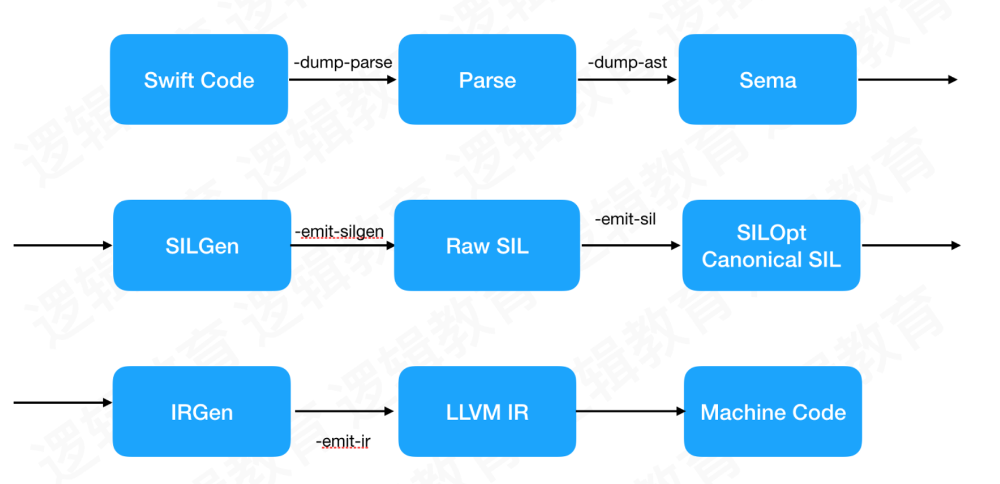
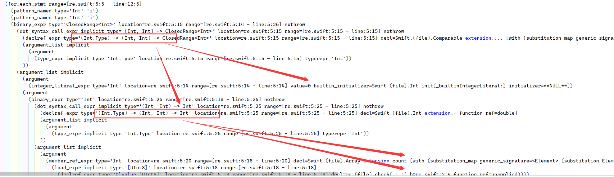
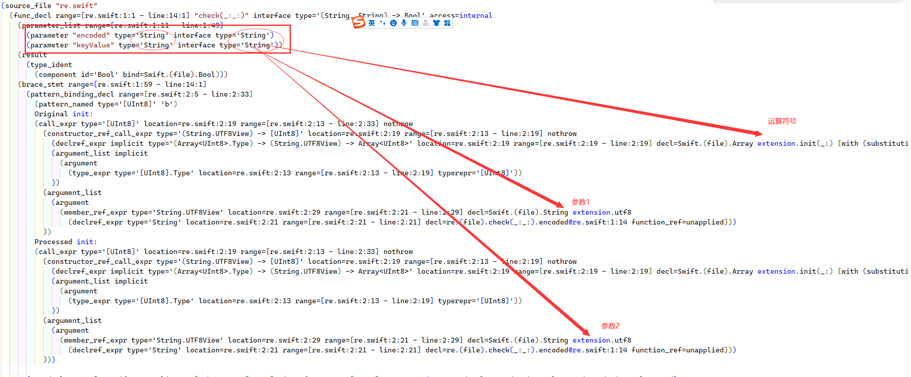
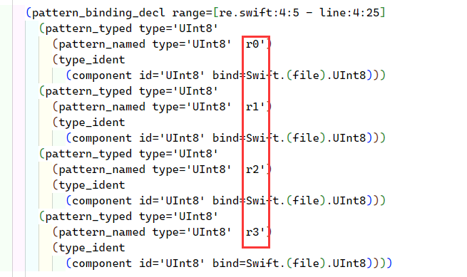
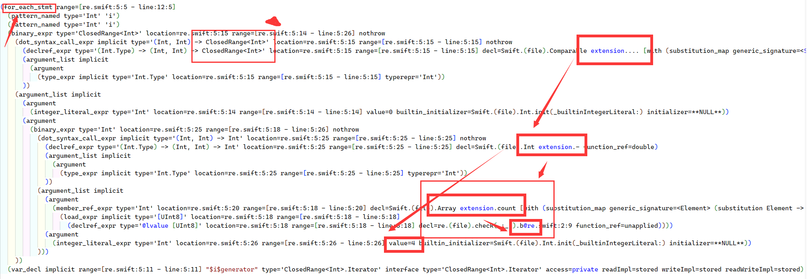
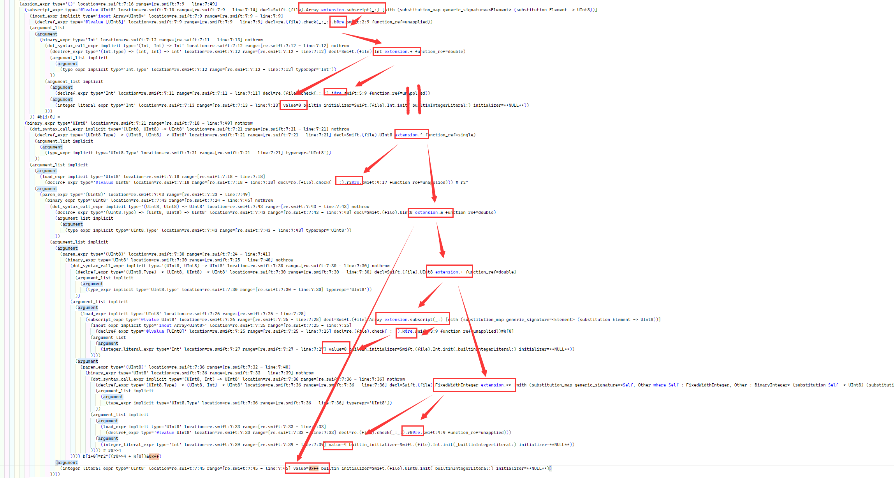
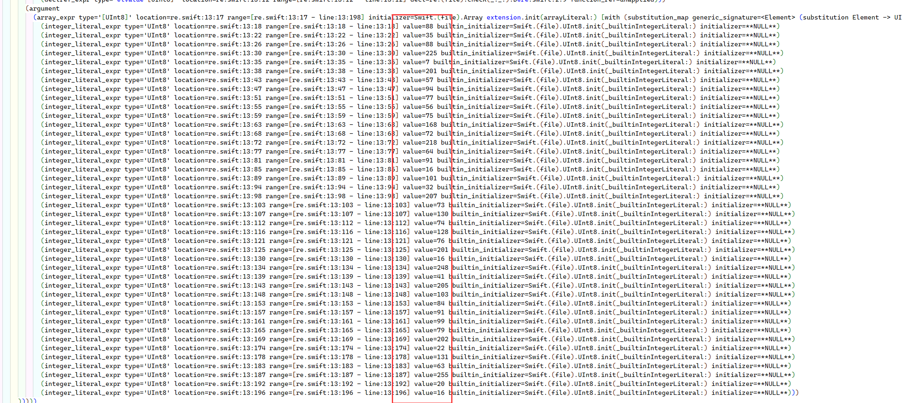

# 2022CISCN
引用某位师傅的吐槽
本以为能在逻辑跳转和汇编指令中大杀四方
结果看了六个小时的超长纯文本阅读题
这年头 RE 连个程序都没有的吗…
先是 Swift AST，后是 Ruby 字节码
我崩不住了。
当然还是自己太菜了，赛后好好复盘一下，明年再战
# babytree
考点：
swift 编译生成中间文件的阅读理解
LLVM 编译流程
Swift 编译流程

我们拿到的附件就是经过 parse解析 ， ast编译 生成的抽象语法树
swiftc -dump-ast LGPerson.swift >> ast.swift |
读一门未知语言的 ast 是一件很折磨的事情，但是 ast 文件本来就是严谨且科学的，所以一定存在某种特定的阅读规则，读 babytree 的时候应该注意每一部分的相同部分以及不同部分例如如下代码
(for_each_stmt range=[re.swift:5:5 - line:12:5] | |
(pattern_named type='Int' 'i') | |
(pattern_named type='Int' 'i') | |
(binary_expr type='ClosedRange<Int>' location=re.swift:5:15 range=[re.swift:5:14 - line:5:26] nothrow | |
(dot_syntax_call_expr implicit type='(Int, Int) -> ClosedRange<Int>' location=re.swift:5:15 range=[re.swift:5:15 - line:5:15] nothrow | |
(declref_expr type='(Int.Type) -> (Int, Int) -> ClosedRange<Int>' location=re.swift:5:15 range=[re.swift:5:15 - line:5:15] decl=Swift.(file).Comparable extension.... [with (substitution_map generic_signature=<Self where Self : Comparable> (substitution Self -> Int))] function_ref=double) | |
(argument_list implicit | |
(argument | |
(type_expr implicit type='Int.Type' location=re.swift:5:15 range=[re.swift:5:15 - line:5:15] typerepr='Int')) | |
)) | |
(argument_list implicit | |
(argument | |
(integer_literal_expr type='Int' location=re.swift:5:14 range=[re.swift:5:14 - line:5:14] value=0 builtin_initializer=Swift.(file).Int.init(_builtinIntegerLiteral:) initializer=**NULL**)) | |
(argument | |
(binary_expr type='Int' location=re.swift:5:25 range=[re.swift:5:18 - line:5:26] nothrow | |
(dot_syntax_call_expr implicit type='(Int, Int) -> Int' location=re.swift:5:25 range=[re.swift:5:25 - line:5:25] nothrow | |
(declref_expr type='(Int.Type) -> (Int, Int) -> Int' location=re.swift:5:25 range=[re.swift:5:25 - line:5:25] decl=Swift.(file).Int extension.- function_ref=double) | |
(argument_list implicit | |
(argument | |
(type_expr implicit type='Int.Type' location=re.swift:5:25 range=[re.swift:5:25 - line:5:25] typerepr='Int')) | |
)) | |
(argument_list implicit | |
(argument | |
(member_ref_expr type='Int' location=re.swift:5:20 range=[re.swift:5:18 - line:5:20] decl=Swift.(file).Array extension.count [with (substitution_map generic_signature=<Element> (substitution Element -> UInt8))] | |
(load_expr implicit type='[UInt8]' location=re.swift:5:18 range=[re.swift:5:18 - line:5:18] | |
(declref_expr type='@lvalue [UInt8]' location=re.swift:5:18 range=[re.swift:5:18 - line:5:18] decl=re.(file).check(_:_:).b@re.swift:2:9 function_ref=unapplied)))) | |
(argument | |
(integer_literal_expr type='Int' location=re.swift:5:26 range=[re.swift:5:26 - line:5:26] value=4 builtin_initializer=Swift.(file).Int.init(_builtinIntegerLiteral:) initializer=**NULL**)) | |
))) | |
)) |
这一大段代码中有很多相似的部分，而且里面的 range 与我们常见的语言中的 range 不是同一个意思和作用，我们尝试除去相同的代码，会发现其中对应每次改变的部分
(declref_expr type='(Int.Type) -> (Int, Int) -> ClosedRange<Int>' location=re.swift:5:15 range=[re.swift:5:15 - line:5:15] decl=Swift.(file).Comparable extension.... [with (substitution_map generic_signature=<Self where Self : Comparable> (substitution Self -> Int))] function_ref=double) | |
(declref_expr type='(Int.Type) -> (Int, Int) -> Int' location=re.swift:5:25 range=[re.swift:5:25 - line:5:25] decl=Swift.(file).Int extension.- function_ref=double) | |
member_ref_expr type='Int' location=re.swift:5:20 range=[re.swift:5:18 - line:5:20] decl=Swift.(file).Array extension.count [with (substitution_map generic_signature=<Element> (substitution Element -> UInt8))] |
这三句代码相似度很高，但是变化的只有一部分，就是 关键字 extension 后面的运算符号，
而 extension 本来就有扩展名的意思 所以猜测 extension 前面的词为应用的方法库，后面则是对应库中具体的方法
则以上的语句就能简化成 ，以此类推后面出现 extension 语句都能做相应替换
... #x...y在Swift中表示从x 到 y 的运算 | |
- #整数减运算 | |
+ #整数加运算 | |
Array.count #应该是计算数组长度的函数 | |
>> #整数>> | |
& #整数& | |
^ #整数^ | |
Array extension.subscript(_:) #表示生成一个以参数名命名的数组例如 subscript b == b[] |
运算知道之后，需要寻找参与运算的参数，继续分析上面的长代码，发现 Swift 生成的 ast 文件特殊的一点是

在方法 declare 的时候同时声明参数数据类型以及运算符号，那么理所当然，参数就需要在之后的语句中寻找
看完了大佬的 wp 后，有一个很重要的定理
Swift 语句调用文件中的其他方法，或者变量时会选择 xxx@aaa 的方式 其中
xxx 为要引用的方法或变量
aaa 为目标文件名
所以就如同上图箭头指明的一样，一个运算调用两个值 （当然也要考虑嵌套的情况）
理解了如上几点后，就可以对整篇文件做阅读理解了
首先看第一段

这里就是将传入的两个 String 类型参数 encoded 和 KeyValue 变成整数数组
也就是如下作用
def check(encoded,keyValue): | |
b= bytearray(encoded.encode('utf8')) | |
k= bytearray(encoded.encode('utf8')) |

接下来就是定义了四个变量，后面也是用 @的方式引用

箭头代表运算的参数这里还有两个注意的点
for_each_stmt
这句语句是遍历一下语句的意思，其中 stmt 就是 statement 的简称，由此推断可能是进入了一个循环
一般 for_each 后面需要接循环变量，按照上面的分析，循环变量出现在后面，而后面是一个运算表达式ClosedRange<Int>
其实顾名思义，就是闭合的 range，python 中的 range 是左闭右开的区间，而这里就是左闭右闭的区间
所以转换成伪代码

运算符与参数都用箭头标识出来，所以可以很容易得到伪代码，后面的代码也以此类推
for i in range(len(b)-4+1): | |
r0,r1,r2,r3=b[i],b[i+1],b[i+2],b[i+3] | |
b[i+0]=r2^((k[0]+(r0>>4))&0xff) | |
b[i + 1] = r3 ^ ((k[1] + (r1 >> 2)) & 0xff) | |
b[i + 2] = r0 ^ k[2] | |
b[i + 3] = r1 ^ k[3] |
密文就直接能看出来，提取就 ok

最后得到伪代码 (swift)
check(encoded: str, keyValue:str) -> bool | |
{ | |
let b = list(encoded) | |
let k = list(keyValue) | |
let r0:UInt8 = | |
let r1 = | |
let r2 = | |
let r3 = | |
foreach i in 0.. b.count - 4 | |
{ | |
(r0, r1, r2, r3) = (b[i], b[i+1], b[i+2], b[i+3]) | |
b[i+0] = r2 ^ ((k[0] + (r0 >> 4) ) & 0xff ) | |
b[i+1] = r3 ^ ((k[1] + (r1 >> 2) ) & 0xff ) | |
b[i+2] = r0 ^ k[2] | |
b[i+3] = r1 ^ k[2] | |
(k[0], k[1], k[2], k[3]) =( k[1], k[2], k[3] , k[0]) | |
} | |
return b == [88,35,88,225,7,201,57,94,77,56,75,168,72,218,64,91,16,101,32,207,73,130,74,128,76,201,16,248,41,205,103,84,91,99,79,202,22,131,63,255,20,16] | |
} | |
{ | |
if() | |
{ | |
let data = arg | |
let key = "345y" | |
let result = check(data, key) | |
print(result) | |
} | |
} |
直接用 z3 解
from z3 import * | |
target = [88, 35, 88, 225, 7, 201, 57, 94, 77, 56, 75, 168, 72, 218, 64, 91, 16, 101, 32, 207, | |
73, 130, 74, 128, 76, 201, 16, 248, 41, 205, 103, 84, 91, 99, 79, 202, 22, 131, 63, 255, 20, 16] | |
s = Solver() | |
flag = [BitVec(f"flag_{i}", 8) for i in range(len(target))] | |
bb = [flag[i] for i in range(len(target))] | |
key = bytearray(b"345y") | |
def check(s, b, k): | |
for i in range(len(b) - 3): | |
(r0, r1, r2, r3) = (b[i], b[i+1], b[i+2], b[i+3]) | |
b[i+0] = r2 ^ ((k[0] + (LShR(r0, 4)))) | |
b[i+1] = r3 ^ ((k[1] + (LShR(r1, 2)))) | |
b[i+2] = r0 ^ k[2] | |
b[i+3] = r1 ^ k[3] | |
(k[0], k[1], k[2], k[3]) = (k[1], k[2], k[3], k[0]) | |
for i in range(len(b)): | |
s.add(b[i] == target[i]) | |
check(s, bb, key) | |
if s.check() == sat: | |
model = s.model() | |
print(bytes(map(lambda x: int(str(x)), map(lambda x: model[x], flag)))) | |
#output: flag{30831242-56db-45b4-96fd-1f47e60da99d} |
b = [88, 35, 88, 225, 7, 201, 57, 94, 77, 56, 75, 168, 72, 218, 64, 91, 16, 101, 32, 207,73, 130, 74, 128, 76, 201, 16, 248, 41, 205, 103, 84, 91, 99, 79, 202, 22, 131, 63, 255, 20, 16] | |
k = [121, 51, 52, 53] | |
for i in range(len(b)-4,-1,-1): | |
(k[1], k[2], k[3], k[0]) = (k[0], k[1], k[2], k[3]) | |
r1 = b[i+3] ^ k[3] & 0xff | |
r0 = b[i+2] ^ k[2] & 0xff | |
r3 = b[i+1] ^ ((k[1] + ((r1 >> 2)) & 0xff)) & 0xff | |
r2 = b[i+0] ^ ((k[0] + ((r0 >> 4)) & 0xff)) & 0xff | |
b[i], b[i+1], b[i+2], b[i+3] = (r0, r1, r2, r3) | |
for c in b: | |
print(chr(c),end="") | |
#output: flag{30831242-56db-45b4-96fd-1f47e60da99d} |
这两个解题脚本都是参考自 Lilac 战队